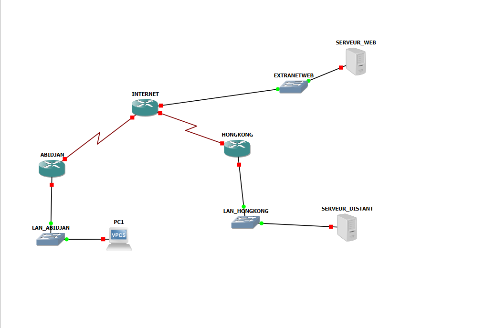

Ce projet démontre la conception, la configuration et la validation d'un tunnel VPN IPSec site-to-site sécurisé entre deux réseaux locaux distants. La solution est implémentée via des routeurs Cisco dans l'environnement GNS3, simulant une interconnexion sécurisée sur un réseau public.
Voici la topologie réseau représentant l'interconnexion des sites ABIDJAN et HONGKONG via INTERNET et le VPN IPSec :

| Site | Réseau local | Passerelle |
|---|---|---|
| ABIDJAN | 10.10.0.0/16 | Routeur ABIDJAN |
| HONGKONG | 192.168.2.0/24 | Routeur HONGKONG |
| INTERNET | Réseau intermédiaire | Routeur INTERNET |
| Composant | Description |
|---|---|
| Simulateur | GNS3 (Graphical Network Simulator-3) |
| Équipements | Routeurs Cisco IOS, IOU L3 |
| Protocole VPN | IPSec (IKE/ISAKMP) |
| Chiffrement | ESP (Encapsulating Security Payload) |
| Authentification | RSA avec clés publiques |
| Routage | Statique |
2.1.1 Définition des politiques ISAKMP
• Choix des algorithmes de chiffrement (AES, 3DES)
• Sélection de la méthode d'authentification (RSA)
• Configuration du domaine
2.1.2 Génération des clés RSA
• Création des paires de clés publique/privée
• Échange des clés publiques entre routeurs
2.1.3 Application des configurations
• Activation des politiques ISAKMP
• Configuration de l'association de sécurité IKE
2.2.1 Définition des transform-sets
• Spécification du chiffrement ESP
• Configuration du protocole d'authentification
• Définition des algorithmes (AES-CBC, SHA-256)
2.2.2 Activation du Perfect Forward Secrecy (PFS)
• Configuration de la génération de clés éphémères
2.2.3 Création et gestion des associations de sécurité (SA)
• Établissement des canaux de communication sécurisés
• Configuration des durées de vie des SA
# Vérification de l'état IKE show crypto isakmp sa # Vérification de l'état IPSec show crypto ipsec sa # Affichage des crypto maps show crypto map # Test de connectivité de bout en bout ping
| Champ | Valeur |
|---|---|
| Projet | Sécurité des réseaux – VPN IPSec |
| Auteur | Saïh Piely Uriel Loïc |
| Niveau | Élève ingénieur 2e année STIC Informatique |
| Établissement | Institut National Polytechnique Houphouët-Boigny (INP-HB) |
| Année académique | 2025–2026 |